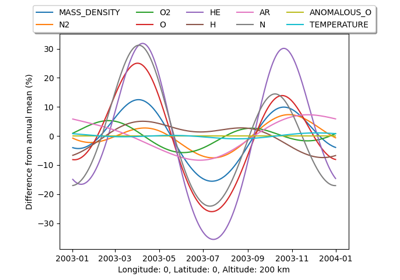
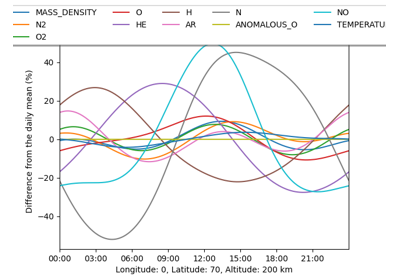

Examples#
This is a collection of demos and examples of what can be done with pymsis.


Annual variation

Diurnal variation
Surface animation


Version Differences (Surface)
This is a collection of demos and examples of what can be done with pymsis.